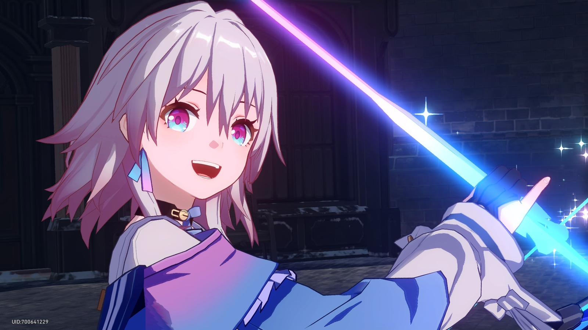
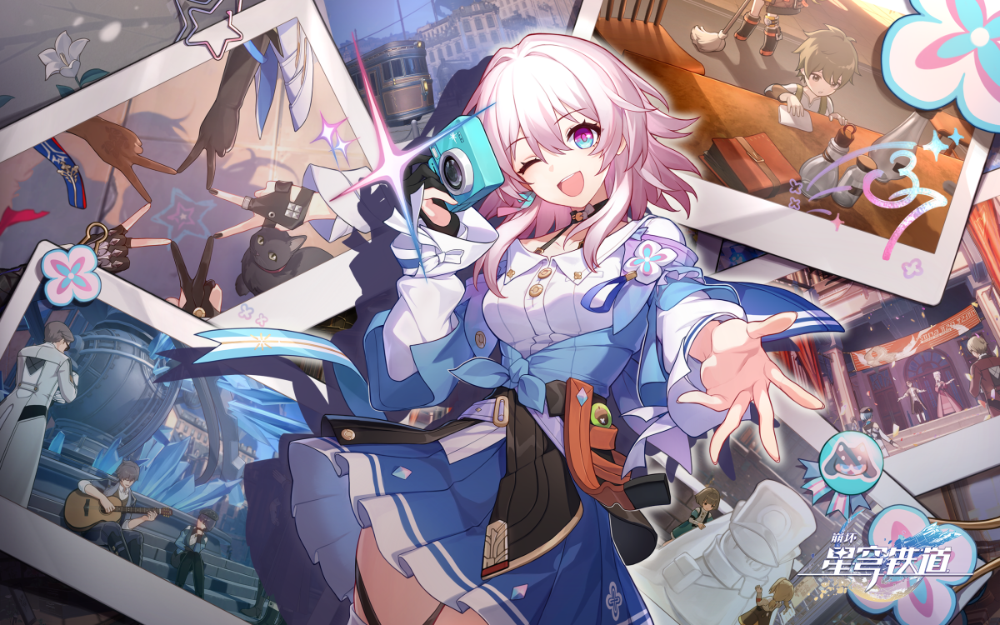

| March 7th dari Honkai : Star Rail | |
|---|---|
|
March 7th adalah karakter yang dapat dimainkan di Honkai: Star Rail. Seorang gadis antusias yang diselamatkan dari es abadi oleh Kru Astral Express, dan memiliki kemampuan unik untuk dapat menggunakan "Es Berfase Enam". Ketika dia terbangun, dia tidak tahu apa-apa tentang dirinya atau masa lalunya, dan memutuskan untuk menamai dirinya berdasarkan tanggal kelahirannya kembali, "7 Maret." Dia mengambil banyak foto menggunakan kameranya dengan harapan menemukan kenang-kenangan dari masa lalunya. |
|
|
Penampilan : March 7th adalah seorang wanita muda dengan rambut merah muda terang dan mata merah muda dan biru. Dia mengenakan atasan putih dengan kancing emas yang dijepitkan ke kalung hitam, serta mantel longgar berwarna merah muda dan biru. Dia juga mengenakan rok lipit biru dan putih dengan rompi hitam di pinggangnya, kamera terpasang di pinggul, serta sepatu bot hitam dan biru dan sarung tangan panahan di tangan kanannya. |
|
Pengisi Suara:
|
|
| Perilisan Karakter : 26 April 2023 | |
| Foto | |
|   | |